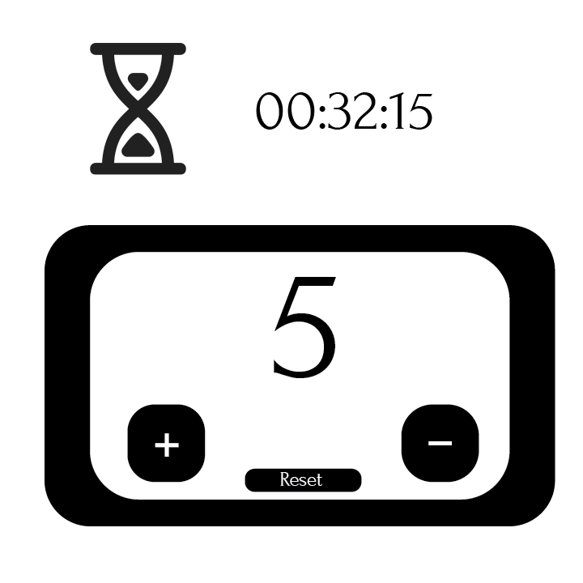
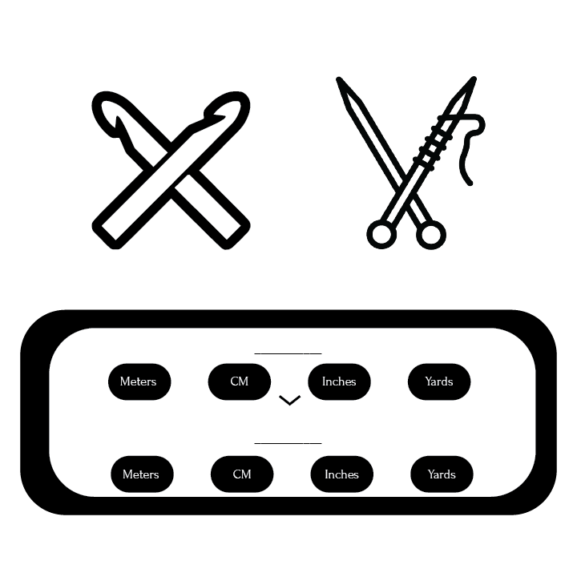
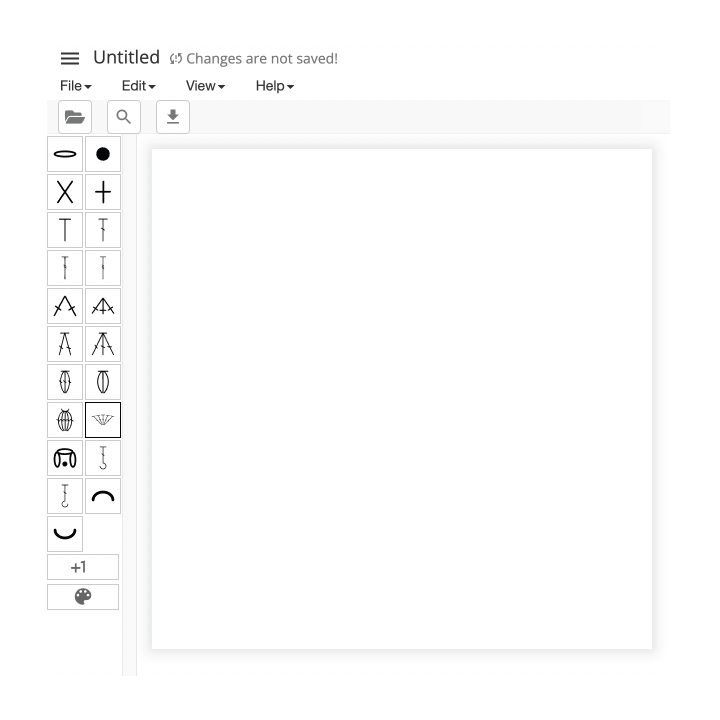
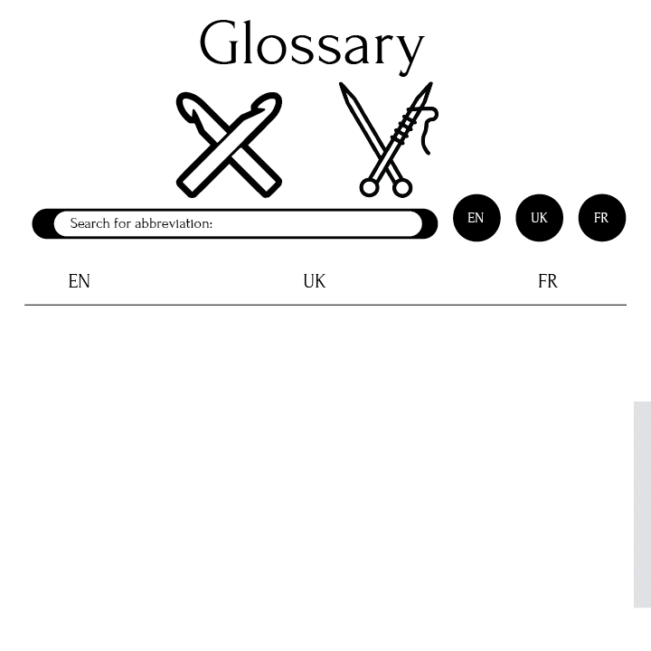
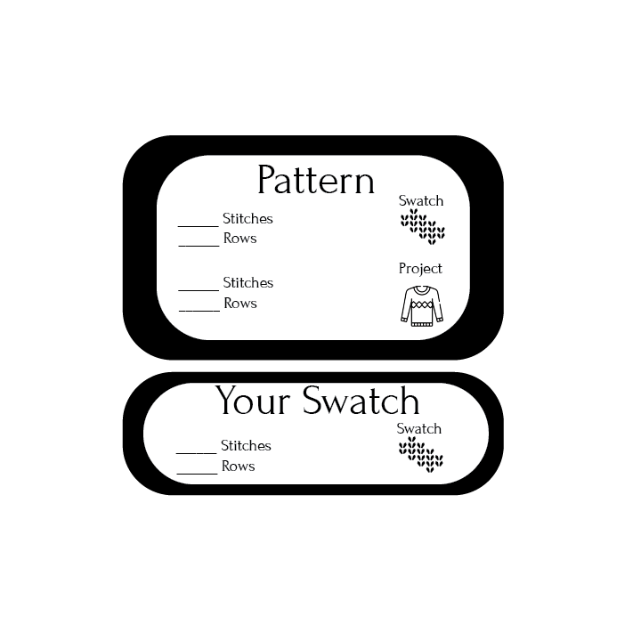
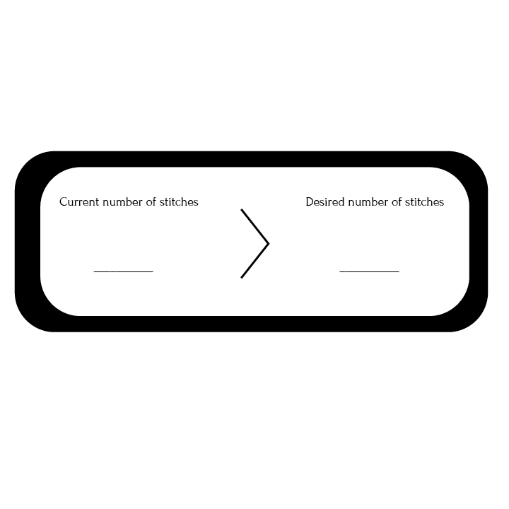

Patterns
Tools
Shop
Connect
Tutorials
Patterns
Tools
Shop
Connect
Tutorials
Stay on track with precision using our row and stitch counter feature, making it easy to keep tabs on your progress stitch by stitch, ensuring you never lose your place in even the most intricate of patterns.
Seamlessly switch between yarn types and measurements with our conversion tool, ensuring smooth transitions between projects without a hitch, and saving you time and hassle in the process.

Effortlessly switch between needle and hook sizes with our conversion feature, providing flexibility and convenience for any project, so you can tackle patterns from around the world with ease.
Unleash your creativity with our intuitive pattern and chart maker, empowering you to bring your unique designs to life stitch by stitch, and share your creations with a global community of fellow crafters.
Expand your crafting knowledge with our comprehensive glossary, offering insights into the terminology and techniques of both knitting and crochet, helping you to confidently tackle new patterns and projects.
Perfect your gauge and fit with our swatch adapter tool, enabling you to adjust tension and needle size for impeccable results every time, ensuring your finished pieces match pattern specifications flawlessly.
Master shaping techniques effortlessly with our distribute increase and decrease feature, ensuring your projects achieve professional-looking symmetry and balance, giving your handmade creations a polished and professional finish.
